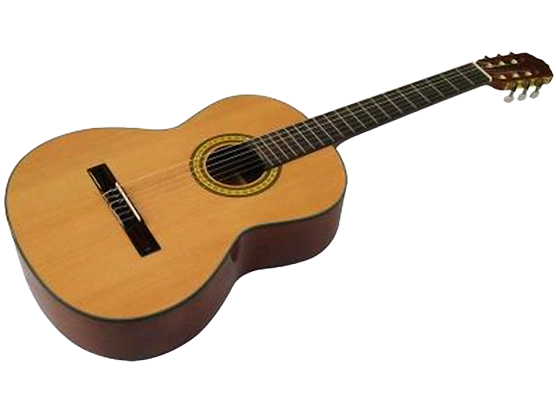

John Pierre Mendes Ligeiro
Pessoa estudante na Trybe (Turma 9 - Setembro/2020) em fase de migração para a área desenvolvimento.
Sou de Engenheiro Mecânico de formação e moro em Caratinga, no leste mineiro.
Entusiasmado com tecnologia, jogos, filosofia, psicologia e ciências em geral.
Sumário
- Habilidades
- Hobbies
- Projetos na Trybe
Habilidades e Qualidades
Entre as habilidades que cultivo, estão:
- Sou autodidata e gosto muito de aprender coisas novas das mais diversas áreas;
- Com perfil comportamental analítico e boa capacidade de concentração e abstração, me sinto muito confortável com a rotina de desenvolvimento;
- Scores de abertura muito altos e intelecto vigoroso;
- Antes da engenharia trabalhei com manutenção de computadores, redes, design gráfico, licenciamento ambiental e lecionei na educação básica;
- Paixão e curiosidade pela natureza e pelos animais.
Meus hobbies

- Música;
- Poesia;
- Cinema;
- Pintura;
- Literatura.
Atualmente passo bastante tempo no site do Banana Cifras aprendendo a tocar as músicas do Chico, do Caetano e do Belchior.
Vez em quando eu arrisco estudar um Villa-Lobos, mas sou nível "iniciante" ainda.
Me arrisco também a escrever poesias e canções, vez ou outra. Deixei aqui um soneto que escrevi esse ano e fala de liberdade.
Projetos Trybe (em construção)
Aqui, os links de acesso para os projetos desenvolvidos ao longo da formação da Trybe. #vqv
- Projeto 1
- Projeto 2
- Projeto 3
- Projeto 4
- Projeto 5
Voltar para o início